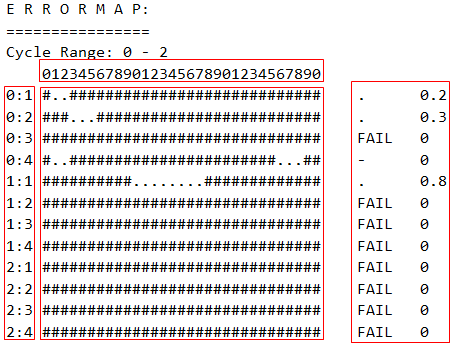

Error map for the SourceSync test method
Error maps for SourceSync tests will output to the report window if you set the test method parameter ErrorMap to Yes and the testflow flag debug_mode to 2.
The error maps, similar to the one below, display:
- A pattern's pass/fail result at different compare times along with the movement of a compare edge.
- The compare edge's margin through analyzing the pass/fail results. The margin is a time range. When the compare edge moves within this range, the corresponding pattern always passes.

In this error map,
- Numbers in the left box specify cycle numbers and their compare edges. For example, "0:1" refers to the first compare edge in cycle 0.
- Numbers in the top box represent compare times (shots) when moving a compare edge.
A pattern will run at every compare time and output the pass/fail result. One compare time is called one shot.
- Symbols in the middle box represent the pattern's pass/fail result at every compare time (shot):
- ".": Pass
- "#": Fail
- Symbols and values in the right box describe the margin for each compare edge.
- . and the displayed value: There is a margin. The margin value is greater than 0.
- FAIL and the displayed value: There is no margin. The margin value is 0.
- - and the displayed value: The system cannot achieve a margin and sets the margin value to 0.
Error maps for repeated tests
If you set the parameters for repeated tests (WholeSweep,or SameTiming) greater than one, the error maps are the merged results of the repeated tests.
- If you set WholeSweep greater than one, for a particular compare edge on
the error map, the displayed pattern pass/fail result at each shot and margin are:
- The largest margin value with the corresponding pattern pass/fail result at each shot.
- "######## FAIL 0", if in one of the repeated tests the pattern fails at all shots.
- If you set SameTiming to an integer greater than one, the displayed
pattern pass/fail result for a particular shot on the error map is the result after ORing all
the test results for this shot.
The following table shows the test and displayed results for a particular shot when SameTiming is 2. The first two columns show the test results. The last column shows the results to be displayed on an error map for this shot .
1st result at a shot
2nd result at this shot
Final result for this shot
Pass (.)
Pass (.)
Pass (.)
Fail (#)
Fail (#)
Fail (#)
Pass (.)
Fail (#)
Pass (.)
Fail (#)
Pass (.)
Pass (.)
Example
Set WholeSweep to 2 and SameTiming to 1.
Assume the first sweep:
1 2 3 4 5 6 7 8 9 10 0:1 # . . # # # # # # # . 0.2 0:2 # # # . . . # # # # . 0.3 0:3 # # # # # # # # # # FAIL 0 0:4 # . . # # . . . # # - 0
the second sweep:
1 2 3 4 5 6 7 8 9 10 0:1 # # # . . . # # # # . 0.3 0:2 # . . # # # # # # # . 0.2 0:3 # # # . . . # # # # . 0.3 0:4 # . . # # # # # # # . 0.2
The error map displayed on the report window will be:
1 2 3 4 5 6 7 8 9 10 0:1 # # # . . . # # # # . 0.3 0:2 # # # . . . # # # # . 0.3 0:3 # # # # # # # # # # FAIL 0 0:4 # . . # # # # # # # . 0.2
Functional changes
- Introduced in MTP 3.2.1